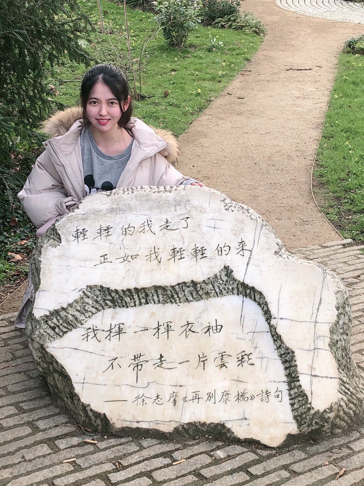

|
Yijia Hao
Bachelor
Glasgow College,
University of Electronic Science and Technology of China,
Sichuan, China
Email: echarhao@gmail.com
|

|
Biography
My name is Yijia Hao. I graduated from the Glasgow UESTC in 2021 with B.Eng. (Hons) in Electronics and Electrical Engineering with Information Engineering. My research interests include deep learning, attention mechanism and application of machine learning in the field of ultrasound.
Bachelor Education
-
Oxford University
Jan 2019 – Feb 2019
Oxford Study Program
Research Experience
-
University of Glasgow
July 2020 – Present
Research Assistant
- Match simulated response curve with experimental curve using promising optimization algorithm
- Compare the performance of optimization algorithms for material properties of the piezocrystal
Publications
Yijia Hao, Yanggang Xu, Huan Wang and Zhiliang Liu*, Selective Kernel Network based on Joint Attention Mechanism for Rolling Bearing Fault Diagnosis, accepted by 2021 15th IEEE International Conference on Electronic Measurement & Instruments, Nanjing, China, 2021.
Yijia Hao, Huan Wang, Zhiliang Liu* and Haoran Han, Multi-Scale CNN based on Attention Mechanism for Rolling Bearing Fault Diagnosis, 2020 Asia-Pacific International Symposium on Advanced Reliability and Maintenance Modeling, Vancouver, BC, Canada, 2020.
https://ieeexplore.ieee.org/document/9209470
Haoran Han, Huan Wang, Zhiliang Liu* and Yijia Hao, An Intelligence Fault Diagnosis Approach for Rolling Bearings Based on Non-local Convolutional Neural Network, 2020 Asia-Pacific International Symposium on Advanced Reliability and Maintenance Modeling, Vancouver, BC, Canada, 2020.
https://ieeexplore.ieee.org/document/9209474
Tongrui Xu, Huan Wang, Zhiliang Liu* and Yijia Hao, Machinery Fault Diagnosis Using Recurrent Neural Network: A Review, 2020 IEEE Global Reliability and Prognostics and Health Management Conference.
https://ieeexplore.ieee.org/document/9280936
Zhiliang Liu, Huan Wang, Dandan Peng, Yijia Hao, Junhao Zhang, Rolling bearing fault diagnosis method based on multi-branch multi-scale convolutional neural network, China patent, No. 201910886575.0, Substantive examination stage.
Zhiliang Liu, Huan Wang, Dandan Peng, Junhao Zhang, Yijia Hao, Rotating machinery fault diagnosis method based on multi-attention convolutional neural network, China patent, No. 201910932922.9, Authorized.
Extra Experience
Peer Tutor, UESTC
Sep 2019 – Present
- Provided one-on-one tutorial sessions for five students with specific academic problems via appointment
- Counseled students regarding their research, career and academic performance
Additional Information
Language Test: IELTS C1
Skills and Tools: MATLAB, C, Python, LaTex, Jupyter Notebook, Webots, LTSpice, Tensorflow
Interests: Calligraphy, Piano, K-POP, Innovation, Storytelling